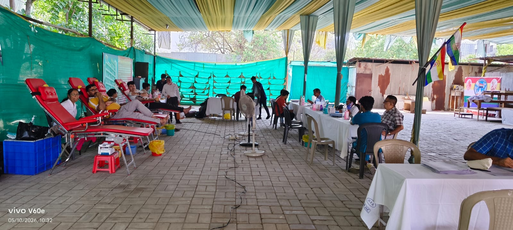

धर्मार्थ औषधालय, सुस (पुणे)
तीर्थंकर प्रभु द्वारा प्रतिपादित अहिंसक चिकित्सा पद्धति को बढ़ावा देने और समाज को एक स्वस्थ जीवन शैली प्रदान करने के उद्देश्य से, जैन संघ पुणे द्वारा वर्ष 2017 में ज्ञानोदय सोसाइटी, सुस (पुणे) में 'जैन चैरिटेबल औषधालय' की शुरुआत की गई थी।
दानदाताओं के उदार सहयोग से संचालित यह औषधालय पूरी तरह से सेवा भाव को समर्पित है, जहाँ बेहद कम खर्च पर मरीजों का इलाज किया जाता है।

Blood Donation Camp

Consultation Camp

🎯 हमारा उद्देश्य और प्रभाव
- प्राचीन एवं अचूक चिकित्सा: औषधालय के माध्यम से अनगिनत लोगों को पुरानी और जटिल बीमारियों (Chronic Diseases) में प्राचीन आयुर्वेदिक पद्धति से अभूतपूर्व लाभ मिला है।
- अहिंसक चिकित्सा की ओर कदम: आधुनिक एलोपैथी (अंग्रेजी दवाओं) में होने वाली हिंसक प्रक्रियाओं और अनैतिक घटकों को छोड़कर, बड़े पैमाने पर लोगों ने शुद्ध एवं अहिंसक आयुर्वेद को अपनाया है।
- बच्चों के भविष्य की सुरक्षा: आज के समय में बच्चों को सामान्य गले की खराश या बुखार होने पर भी भारी मात्रा में एंटीबायोटिक्स दिए जाते हैं, जिसके दीर्घकालिक नुकसान (Side Effects) होते हैं। औषधालय की शुरुआत के बाद से, कई परिवारों ने अपने बच्चों के लिए एंटीबायोटिक्स की जगह आयुर्वेद पर भरोसा जताना शुरू कर दिया है।
🛡️ कोरोना काल में अनुकरणीय सेवा
वैश्विक महामारी कोरोना के कठिन समय में भी जैन संघ पुणे और इस औषधालय ने समाज की सुरक्षा में अग्रसर भूमिका निभाई:
- रोग प्रतिरोधक क्षमता (Immunity) का विकास: महामारी के दौरान समाज के लोगों को गिलोय जैसी दिव्य जड़ी-बूटियाँ और आयुर्वेदिक दवाएं निशुल्क/सुलभ रूप से उपलब्ध कराई गईं।
- ऑनलाइन जागरूकता अभियान: अनुभवी आयुर्वेदिक वैद्यों के माध्यम से ऑनलाइन कॉन्फ्रेंस का आयोजन किया गया, जिसमें लोगों को घर बैठे कोरोना से लड़ने और अपनी इम्यूनिटी बढ़ाने के वैज्ञानिक तरीके सिखाए गए।
पुनः शुरुआत: कोरोना काल के अनिवार्य अंतराल (गैप) के बाद, अगस्त 2022 से जैन संघ पुणे द्वारा इस औषधालय को पूरी ऊर्जा के साथ पुनः शुरू किया गया है। आज यह औषधालय पहले की तरह ही जन-जन की सेवा में अग्रणी भूमिका निभा रही है।
आइए, हम सब मिलकर तीर्थंकर प्रभु के अहिंसा के मार्ग पर चलें और शुद्ध, सात्विक एवं प्राचीन आयुर्वेद को अपने जीवन का हिस्सा बनाएं।